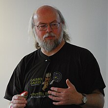

|
Dennis Ritchie
|
 |
c |
1972 |
Ko'p paradigma : imperativ ( protsessual ), tuzilgan |
| 2 |
James Gosling
|

|
Java |
1995 |
Ko'p paradigma : umumiy , ob'ektga yo'naltirilgan ( sinfga
asoslangan ), funktsional , imperativ , aks ettiruvchi , parallel
|
| 3 |
Brendan Eich
|

|
JavaScript |
1995 |
Ko'p paradigma : hodisaga asoslangan , funktsional , imperativ ,
protsessual , ob'ektga yo'naltirilgan
|
| 4 |
Guido van Rossum
|
|
Python |
1991 |
Multi-paradigm: object-oriented, procedural (imperative),
functional,
|
| 5 |
Rasmus Lerdorf
|
|
PHP |
1995 |
Ko'p paradigma : imperativ , funktsional , ob'ektga yo'naltirilgan ,
|